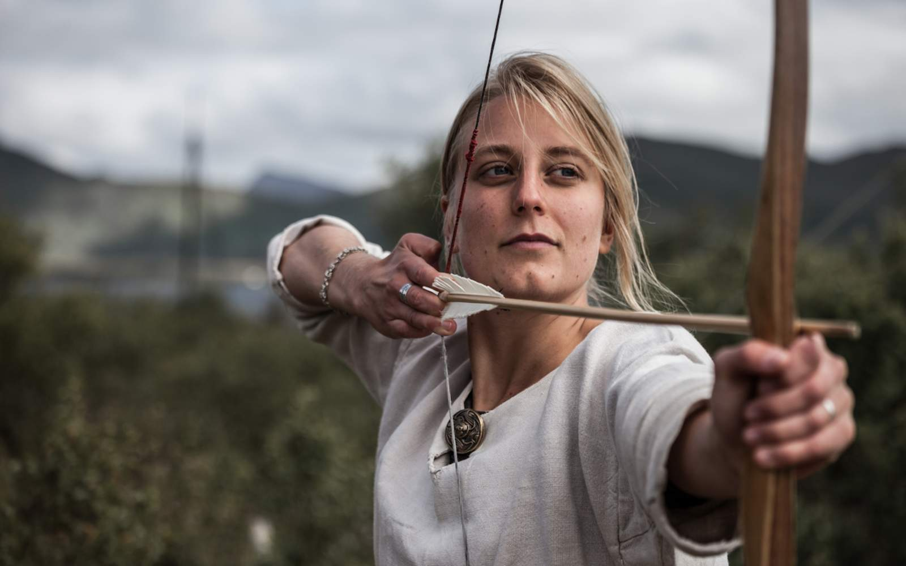

Дух викингов в Норвегии чувствуется повсюду: в истории викингов,
музеях, на экскурсиях, в
поселениях викингов,
различных тематических событиях в огромном количестве мест по всей стране.
Что тысячу лет назад можно было назвать высокими технологиями? Может быть, летящие по волнам корабли викингов? Эти передовые творения помогали налаживать культурные связи в Европе, а также играли ключевую роль в процессе объединения норвежских общин в единое государство.
История и культура викингов
Начало эпохе викингов положило нападение на монастырь Линдисфарн в 793 году,известное как первый набег викингов.
Событием, отметившим окончание
славных дней, стала гибель конунга Харальда III
Сурового
в битве
при Стамфорд-Бридже в 1066 году.
Экспансия викингов
Викинги основали несколько городов и колоний, включая Дублин в Ирландии и регион Нормандия во Франции. Дублин оставался крупным поселением викингов более трех столетий. В период с 879 по 920 викинги заселили Исландию, которая, в свою очередь, стала ступенькой к освоению Гренландии. Радиоуглеродный анализ остатков поселения викингов в Л’Анс-о-Медоуз на Ньюфаундленде датирует это поселение приблизительно 1000 годом.
ПОЗНАКОМЬТЕСЬ С КУЛЬТУРОЙ ВИКИНГОВ
Викинги-воины
Как смог малочисленный и рассредоточенный на больших расстояниях народ подчинить себе такую огромную территорию? Норвежским викингам было свойственно бесстрашное, фаталистическое видение мира, что, естественно, делало их прирожденными авантюристами. Участники набегов обладали поразительной способностью не обращать внимания ни на поражения в битвах на суше, ни на неудачи в опасных морских экспедициях. Число погибших в бою иногда было угрожающе высоким по отношению к общему количеству викингов, но это целых 250 лет не мешало им завоевывать и исследовать новые земли и моря.
Мирные торговцы и любители меда
Викинги известны, главным образом, как безжалостные грабители, и это вполне справедливо. Однако, в то же время, многие из них были мирными торговцами и фермерами, и зачастую экспедиции снаряжались ради меновой торговли. Те, кто избегал зарабатывать на жизнь морским грабежом вдали от дома, обеспечивали свои семьи обычным фермерством. Их повседневная жизнь, вероятно, была непростой и отнимала много сил, но и в ней было место веселью. Самым известным напитком викингов был мед, алкогольный напиток, похожий на пиво, подслащенный медом.
Конструкция
Конструкция ранних кораблей викингов, известных как лонгшипы (или ладьи), была принята на вооружение в некоторых других культурах и в течение нескольких столетий оказывала влияние на кораблестроение. При строительстве таких кораблей доски из дуба скреплялись внахлест железными или деревянными гвоздями, а иногда даже «вязались», после чего вся конструкция конопатилась смесью смолы или дегтя и шерсти.
Применение
Корабли использовались для набегов, а также для мирной торговли. Многие викинги погибали в сражениях в континентальной Европе, а в 876 году сильный шторм у южного побережья Англии унес жизни 4000 человек и разрушил 120 судов. Когда умирали видные викинги, их клали на погребальный корабль вместе с одеждой, драгоценностями и даже с принадлежавшими им животными.
Музей кораблей викингов в Осло
Здесь вы можете обойти вокруг лучше всего сохранившихся кораблей викингов и вдохнуть запах смолы Осебергского, Гокстадского и Тюнского кораблей.